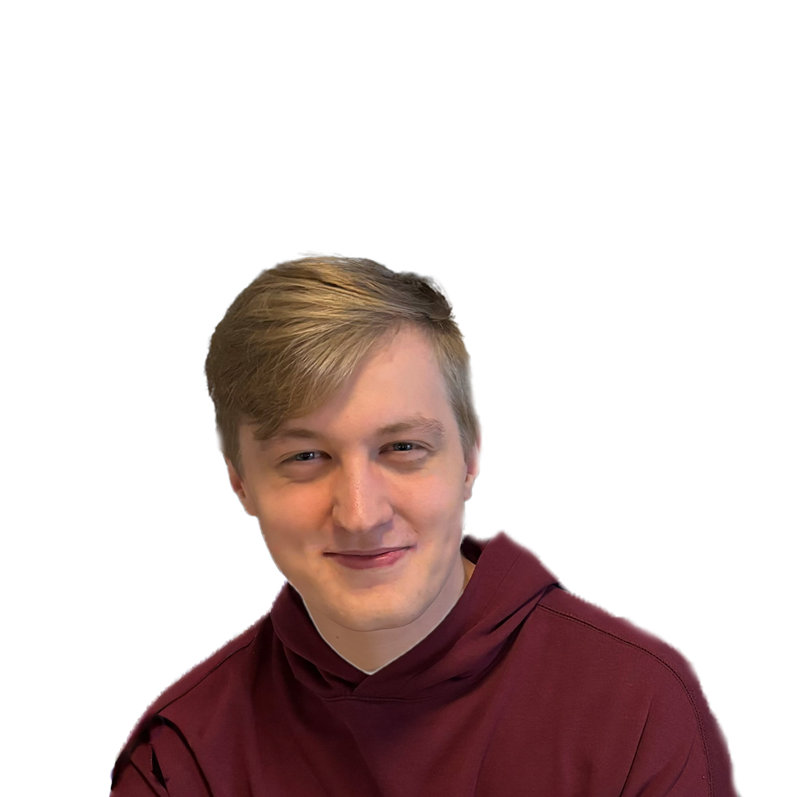

Abel Geyskens
Hallo! Ik ben een enthousiaste designer met een liefde voor creatieve, mooi afgewerkte projecten. Ik werk graag samen en ga altijd voor het sterkste resultaat. In mijn vrije tijd hike ik in Wallonië met mijn camera. Benieuwd naar de beelden? Scroll naar beneden!
Vaardigheden
- HTML, CSS & moderne layouts
- JavaScript & interactie
- Design
- Gebruiksvriendelijke interfaces
Persoonlijke informatie
- Naam: Abel Geyskens
- Locatie: België
- Specialisatie: Design
- Interesses: Design, technologie, fotografie
Projecten
Fotografie
Fotografie is voor mij een creatieve passie waarin techniek en gevoel samenkomen. Het vastleggen en bewerken van beelden geeft mij de mogelijkheid om verhalen visueel te vertellen en mijn creatieviteit te uiten. Je zult me vaak tegenkomen op hikes doorheen België om de mooiste plaatsen vast te leggen.